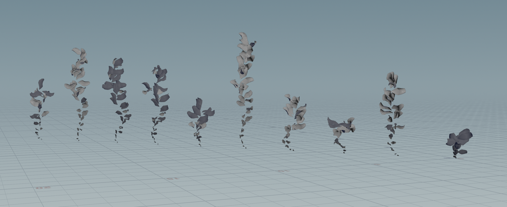
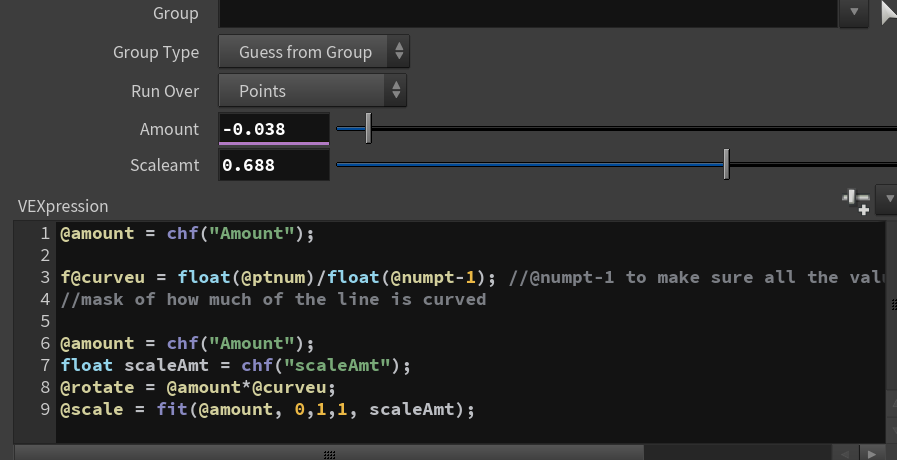
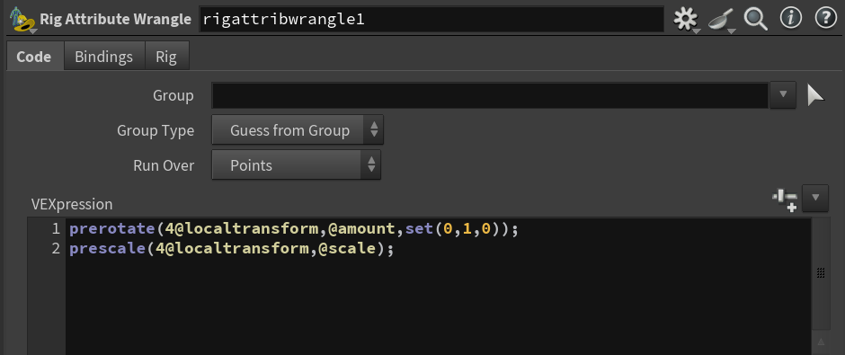
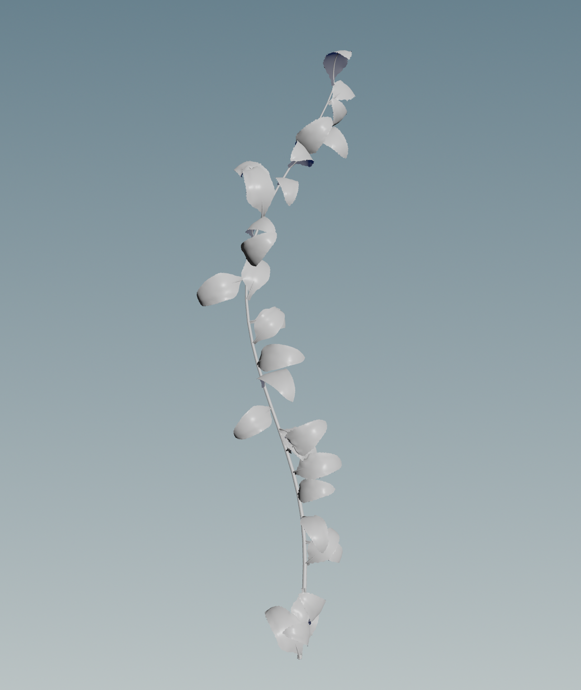
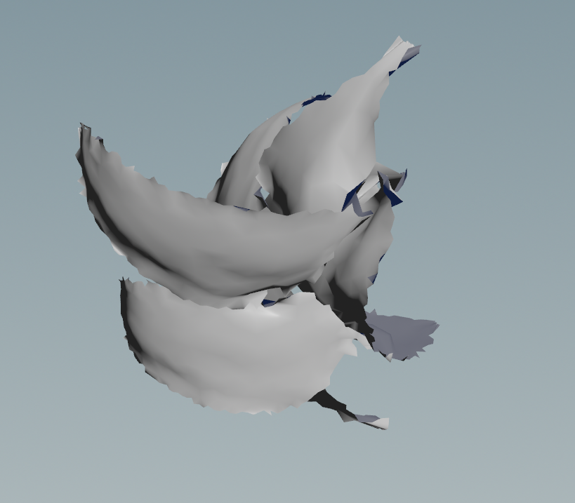
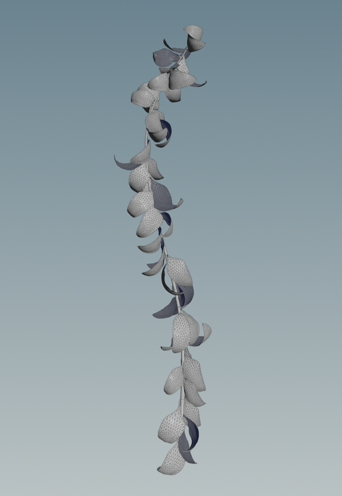
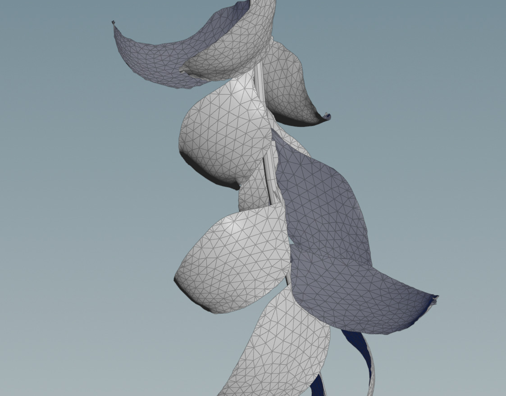

Here are my results from following the feather tutorial. I added a simple scale animation to see how
the feather animation looks like, it looks like the solve is done very beautifully.
The issue I see here is
that I cannot seem to input geo that is not part of the feather tool. The Deintersect reads specific attributes
for the barbs [feather fluffies] and the shaft [feather center]. This leads me to potentially exploring:
1. Trying to create a square for the barbs with the feather tools so I can create leaves by applying an opacity map
2. Diving inside the Feather Shape tool to see if I can assign those attributes to other geometery
3. Since the Feather Tools are essentially grooms, looking into the Hair tools as well to see if there are other ways to solve intersections
I did a simple hair groom on a sphere and copied my rigged leaf shape to the hair. This test was unsuccessful, I was unable to deintersect the geomtery.
After doing some digging, I found that there is a Feather Surface node that will consolidate the barbs and create a smooth surface like a leaf.
I tried plugging in this shape into my previous feather Deintersect setup but it looks like this node gets rid of the needed attributes.
I wanted to revisit the kineFX and vellum set up because it seemed to be working for many artists online. An interesting idea I found was to use the feather tool to create a rig for a leaf, since it is
essentially the same shape as a feather.
After examining a downloadable Houdini file under one of my references I realized that the starting position of the vellum sim was an open leaf- not the bud position.
I animated the leaf rig to start from the open position to the closed one and then unfolded it again and the collisions were as expected! Here is a flipbook!
The next thing was created a PDG set up where I randomized the length, curve, and number of leaves for 10 vines to see how usable the results were. I think for these
vines in particular I was playing very safe with the ranges so I didn't end up with any results that were too crazy.

The total cache time was 12 hours for 2300 frames on a 3090 computer. I will
be running this set up tomorrow on the Blackwells and see how much faster it is.
WHAT'S NEXT
1. Create a set up so we can plug in different leaf/petal shapes and structures to create different types of plants
2. Test particle system[from gaussian splats?] flower growth
WEEK 1
GOAL OF THE WEEK
Incorporate vellum to create a growing vine simulation, output a USD to send to Unreal testing
KNOWN ISSUES FROM LAST VINE SIM
1. Lot of intersecting geo 2. Leaves all look the same/not natural enough 3. Vine movement was not predictable (position of vine changed as it grew)
The first thing I wanted to tackle was to understand the curveu attribute. The curveu attribute remaps the curve for it to fit from 0 to 1 and then it can act as a mask. Which means I can curl the top part of the curve without it affect the bottom.
Here is some kineFx rig code I got from the Flower Garden video where he explained the basics of kinefx. This rig gives you a very basic curl animation based on the mask. The attribute wrangle sets up the attribute values based on the point numbers and the rig wrangle is what actually makes the line curl.


From there, I created a leaf using a line and sweep mesh ribbon. I shaped the sweep with ramp scaling and some noise. I created a base vine stem to which I used copy to points to attach the the individual leaf rigs. I made sure to randomized normal and pscale attributes to break up uniformity.
I then used a for each loop to path deform the leaf geo with the rig. I later found a VEX code snippet that path deforms better than the default node.
The second aspect I wanted to figure out was intersection. I used Paul Esteve’s Flower Project video to find how to connect geometry to a curve and then run a vellum simulation that will keep leaves in a similar position.
I animated an exploded view node so that the geometry starts without any intersection and then slowly comes to its final position. I used a Pin To Target vellum constraint with a Soft pin type. This method did not end up working- although the leaves were colliding, they wrinkled along the way as well.


The second method I tried to de-intersect the leaves was using an Attach to Geometry constraint where I pinned the leaves to the stem. Instead of animating the leaves, I stretched the stem on the y-axis til the leaves no longer intersect and then animated it scaling down to its regular size. This method worked beautifully and the leaves very gracefully rested on top of each other with no intersection.


WHAT'S NEXT
1. Find possibility of preserving curveu attribute for each individual leaf curling from before vellum simulation.
2. Create same curling effect with the base stem and combine with leaf scaling.
3. Time offsetting to make bottom leaves grow before top ones.
4. Since the leaves have attributes transferred from the stem, would the animated values transfer as well?
5. Try using Carve node to draw out the vine
6. Try animating a volume mask which has attributes that will transfer onto vine.